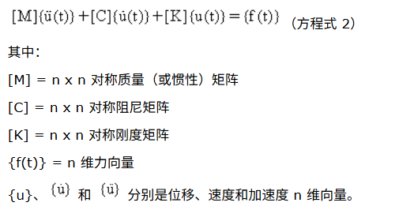
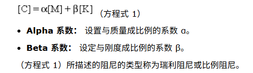
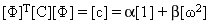
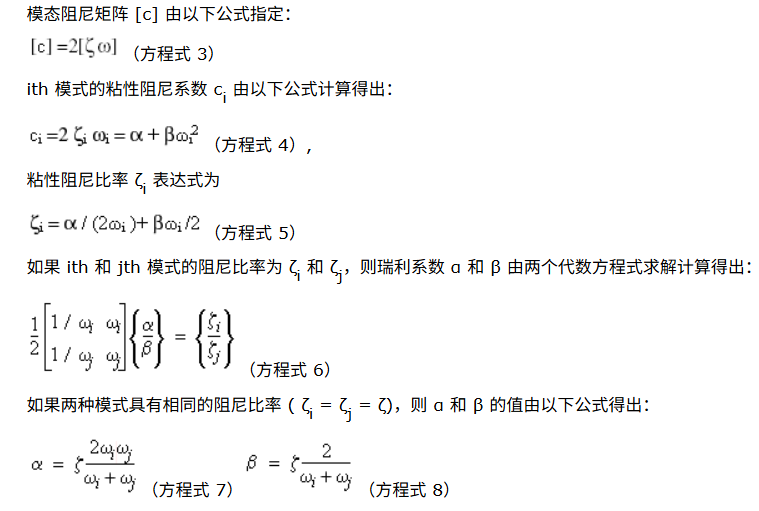
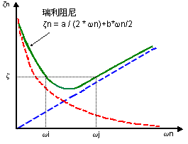
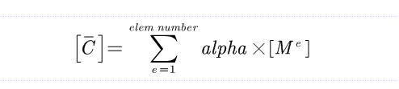

常用的阻尼效应设置
如果对动态系统应用了初始加载,系统会以不断减小的振幅振动,直到最终停止。这种现象称为阻尼效应。阻尼效应是一种复杂的现象,它以多种机制(例如内摩擦和外摩擦、轮转的弹性应变材料的微观热效应、以及空气阻力)消耗能量。
这些能量消耗机制难以通过数学方式描述。阻尼效应通常由理想化的数学公式来表示。在很多情况下,粘性阻尼足以说明阻尼效应。
粘性阻尼假定:阻尼力和速度成正比
具有一般粘性阻尼的 n 自由度系统的动力学方程为:

在进行动态分析中,多数有限元软件都会支持下面这些阻尼类型:
- 模态阻尼
- 瑞利阻尼
- 复合模态阻尼
不同软件的称呼可能不一致
1. 阻尼效应的引入方法:构造整体阻尼矩阵
大多数有限元软件都是通过构造整体阻尼矩阵来引入结构阻尼效应。
1.1 模态阻尼比
- 方法1
直接指定每个模态的阻尼比,阻尼比定义为
这样就可以构造一个对角阻尼矩阵
- 方法2
从材料阻尼中计算,材料阻尼中可以指定alpha和beta两个参数,此时单元阻尼矩阵用这些常数乘以质量矩阵[M]和刚度矩阵[K]后计算出来的。
比如ansys中,和材料相关的阻尼允许将Beta阻尼做为材料性质来指定.
在许多实际问题中,Alpha阻尼(或称质量阻尼)可以忽略(α=0)。
1.2 瑞利阻尼
整体阻尼矩阵是由质量矩阵和刚度矩阵按比例组合构造而成的,例如:
C = α[M] + β[K]:其中 C 是阻尼矩阵,M 是质量矩阵,K 是刚度矩阵。
参数:
- Alpha 系数: 设置与质量成比例的系数 α。
- Beta 系数: 设定与刚度成比例的系数 β。
α,β两个参数可以根据任意两个模态下的模态圆频率
2. 模态阻尼
模态阻尼被定义为每个模态的临界阻尼Ccr的比率。临界阻尼 Ccr 是促使系统在不振荡的情况下回到其平衡位置的最小阻尼。
模态阻尼比率可借助正确的现场测试来精确确定。这一比率在 0.01(对应轻阻尼系统)和 0.15 或更高数值(对应高阻尼系统)之间变化。
当实验数据不可用时,请使用同类系统的数据来确定阻尼属性。较高的比率会缩小振动振幅,因此使用较低的比率将是比较稳妥的。一般而言,忽略阻尼会使对系统响应的估计偏于保守
3. 瑞利阻尼
n x n 对称阻尼矩阵 [C] 以质量 [M] 和刚度 [K] 矩阵的线性组合公式化形式阐述:

这种形式的 [C] 与系统的特征向量正交。
通过模态坐标转换,模态阻尼矩阵 [C] 将变为对角关系:

4. 模态阻尼和瑞利阻尼的关系

所有其它模式的粘性阻尼比率 ζ 将随频率的变化而变化,如图所示:

5. 复合模态阻尼
复合模态阻尼允许将阻尼定义为材料属性。通过为每中材料或者每个单元定义一个alpha参数。然后遍历所有单元组装对应的全局阻尼矩阵:

然后计算第i个模态的复合模态阻尼:
以上内容来自SOLIDWORKS和ANSYS的帮助文档,更多注意事项需要查看帮助文档